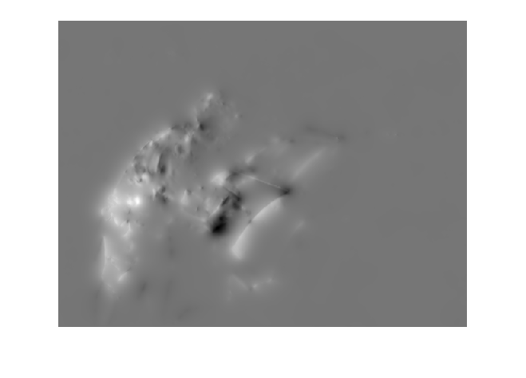
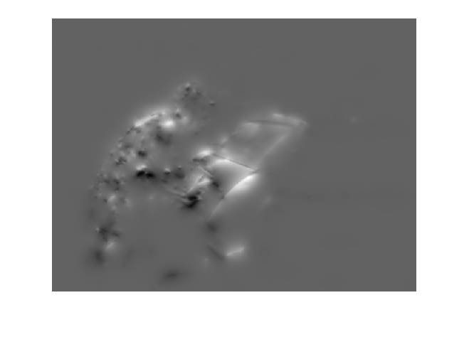
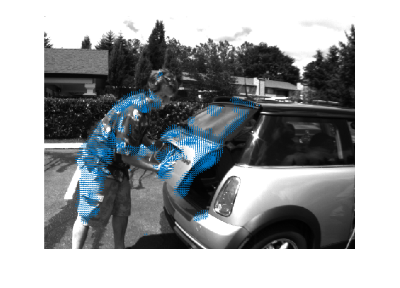

Contents
clear;
close all;
I2 = im2double(imread('i0002.png'));
I4 = im2double(imread('i0004.png'));
hauteur=size(I2,1);
largeur=size(I2,2);
lambda = 1;
epsilon = 0.01;
voisinnage=3;
calcul des gradients
It = I4-I2;
[Ix,Iy]=gradient(I2);
u = zeros(hauteur,largeur);
v = zeros(hauteur,largeur);
ubar=zeros(hauteur,largeur);
vbar=zeros(hauteur,largeur);
h=(1/(voisinnage^2))*ones(voisinnage,voisinnage);
for iter=1:500
for i=1:hauteur
for j=1:largeur
truc = (Ix(i,j)*ubar(i,j) + Iy(i,j)*vbar(i,j) + It(i,j)) / (lambda^2 + Ix(i,j)^2 + Iy(i,j)^2);
u(i,j)=ubar(i,j) - Ix(i,j) * truc;
v(i,j)=vbar(i,j) - Iy(i,j) * truc;
end
end
ubar = filter2(h,u);
vbar = filter2(h,v);
end
figure(3);
imshow(u,[]);
figure(4);
imshow(v,[]);
for i=1:hauteur
for j=1:largeur
if( sqrt((u(i,j)^2 + v(i,j)^2 )) < 0.5)
u(i,j)=0;
v(i,j)=0;
end
end
end
for i=1:hauteur
for j=1:largeur
if( mod(i,4)~=0 || mod(j,4)~=0 )
u(i,j)=0;
v(i,j)=0;
end
end
end
pause(1);
figure(5);
imshow(I2,[]);
hold on;
quiver(1:640,1:480,u,v,11);
  